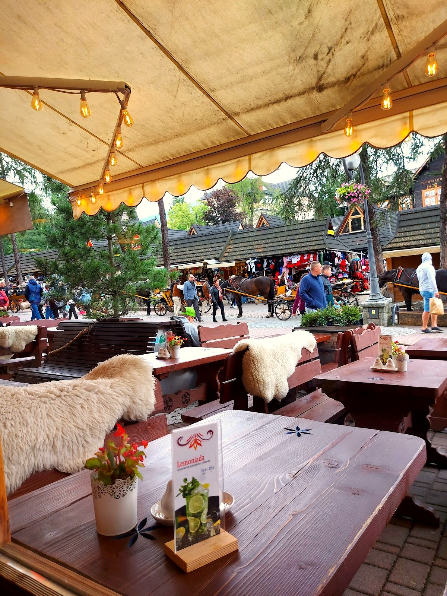

Krupówki 9
Od fiakrów na Krupówkach
Karczma z duszą Podhala
Karczma u Fiakra wzięła nazwę od fiakrów - dorożkarzy, którzy od dziesiątek lat stają ze swoimi powozami naprzeciw karczmy, przy samych Krupówkach. Powstała z miłości do dobrego jedzenia i przywiązania do góralskiej tradycji.
Wnętrza w całości z drewna, pełne autentycznych dekoracji zbieranych z najdalszych zakątków Podhala, rozkładają się na dwóch poziomach z kameralną antresolą. Latem zapraszamy do ogródka z widokiem na tętniące życiem Krupówki.
„Siadasz, słuchasz kapeli i czujesz się jak w prawdziwej góralskiej chacie.”